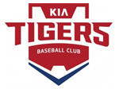

해태 타이거즈(현 KIA)가 어떤 팀인지를 설명하는 데는 긴 말이 필요치 않다. 프로야구 출범 30년 동안 열 차례 한국시리즈에 진출해서 열 번 모두 우승한 무적의 팀. 1983년부터 1997년 사이에만 아홉 번의 한국시리즈 우승으로 프로야구사에 유일하게 ‘왕조’를 이룩한 팀. 7명의 정규시즌 MVP와 50명의 골든글러브 수상자를 배출한 스타 군단. 그게 타이거즈라는 팀이다. 지금까지도 타이거즈와 같은 팀은 없었고, 앞으로도 그와 같은 팀을 다시 보기는 어려울 것이다.
